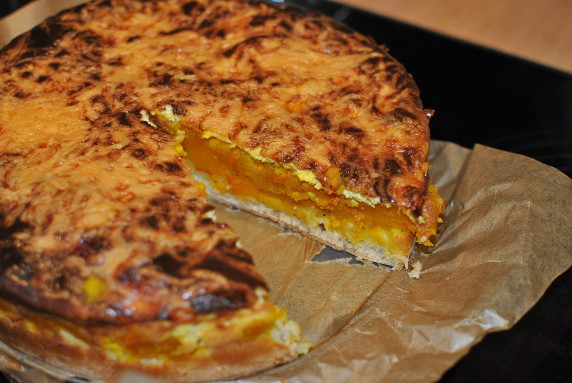

Pikanter Kürbiskuchen

- Zubereitung: ca. 30 Minuten
- Backzeit: ca. 60 Minuten
- Für 1 Springform (28 cm)
Zutaten
- 1 Beutel Fertigmischung für Pizzateig
- 1 kg Hokkaido-Kürbis
- 200 ml Gemüsebrühe
- 1 Knoblauchzehe
- Salz und Pfeffer
- 200 g Frischkäse
- 100 ml Sahne
- 2 Eier (Größe L)
- 1 TL Currypulver
- 150 g Käse, mittelalter Gouda
Zubereitung
- Das Kürbisfleisch in ca. 1 cm große Würfel schneiden und in der Gemüsebrühe ca. 5 Minuten kochen. Die Knoblauchzehe durch eine Presse drücken.
- Den Kürbis abgießen, mit Salz, Pfeffer und dem Knoblauch würzen und die Masse auf den Pizzateig geben. Den Frischkäse, die Sahne und die Eier verquirlen, mit Pfeffer, Salz und dem Curry abschmecken und über die Kürbismasse gießen.
- Das Ganze mit dem geriebenen Gouda bestreuen und im vorgeheizten Backofen bei 150-175° Celsius, je nach Ofentyp, ca. 60 Minuten backen.
- Der Kuchen kann warm als Vorspeise oder abgekühlt als pikanter Kuchen serviert werden.